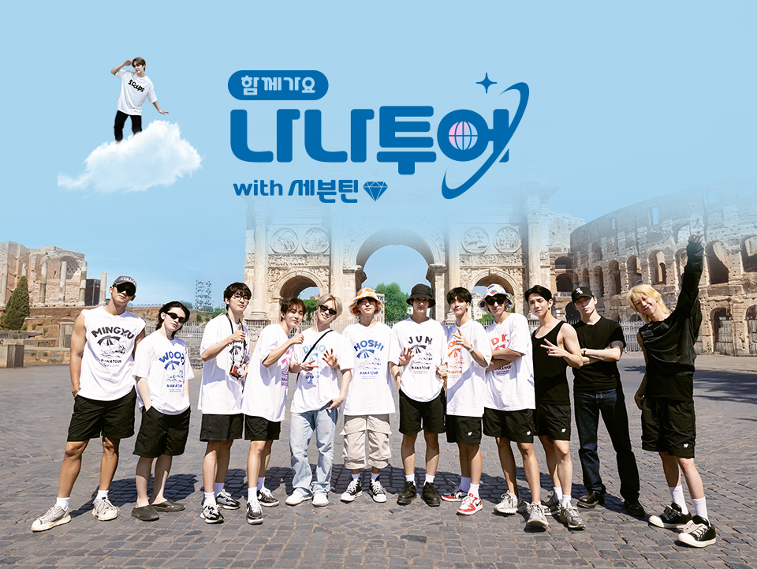

Welcome to the Blog!
Rekomendasi Drama Korea Bergenre Rom-Com 2024
Drama Korea terbaru selalu menjadi sorotan utama bagi para penggemar hiburan Korea. Tahun 2024 pun tidak ketinggalan dengan kehadiran 7 drama terbaru yang siap menghibur dan memikat hati pecinta komedi romantis. Dari cerita yang menggelitik hingga chemistry yang memukau, drama-drama ini menjadi asupan manis yang tak boleh dilewatkan. Yuk, simak ulasan lengkapnya di bawah dan temukan drama Korea favoritmu! Klik untuk lihat selengkapnya.
Informasi Terbaru untuk Kamu yang Ingin Menambah Lagu Hits di Playlist Mu!
Dunia musik selalu penuh dengan kejutan dan antusiasme setiap minggunya, terutama dengan rilis terbaru dari Billboard Hot 100. Tangga lagu ini memberikan gambaran yang akurat tentang lagu-lagu paling populer saat ini, dari hits yang mendominasi tangga lagu hingga lagu-lagu baru yang mulai menanjak ke popularitasnya. Billboard Hot 100 tidak hanya menjadi acuan utama bagi para pecinta musik untuk tetap update dengan trend terkini, tetapi juga menjadi sumber inspirasi bagi musisi dan penikmat musik di seluruh dunia. Yuk, jangan lewatkan daftar lengkap lagu-lagu teratas Billboard Hot 100 di artikel kami, dan temukan musik-musik pilihan yang sedang merajai dunia musik saat ini!
Klik untuk lihat selengkapnya.
Terinspirasi Liburan, Intip 6 Rekomendasi Variety Show Traveling Korea Ini!

Dunia variety show Korea Selatan selalu menawarkan petualangan yang mengasyikkan dan pemandangan yang memukau bagi para penontonnya. Dari keindahan alam yang menakjubkan hingga petualangan seru di berbagai destinasi menarik, variety show traveling Korea menjadi inspirasi yang tak terbantahkan bagi para pecinta perjalanan. Jika Anda merasa bosan dengan rutinitas sehari-hari dan ingin merasakan sensasi liburan tanpa harus meninggalkan rumah, maka 6 rekomendasi variety show traveling Korea ini adalah pilihan yang sempurna untuk Anda nikmati. Siapkan camilan favorit Anda, nyaman di sofa, dan biarkan diri Anda terbawa dalam petualangan seru yang ditawarkan oleh variety show ini. Jadi, jangan ragu untuk menonton dan bersiap-siaplah untuk tergoda untuk segera merencanakan liburan ke Korea Selatan setelah menontonnya!
Klik untuk lihat selengkapnya.